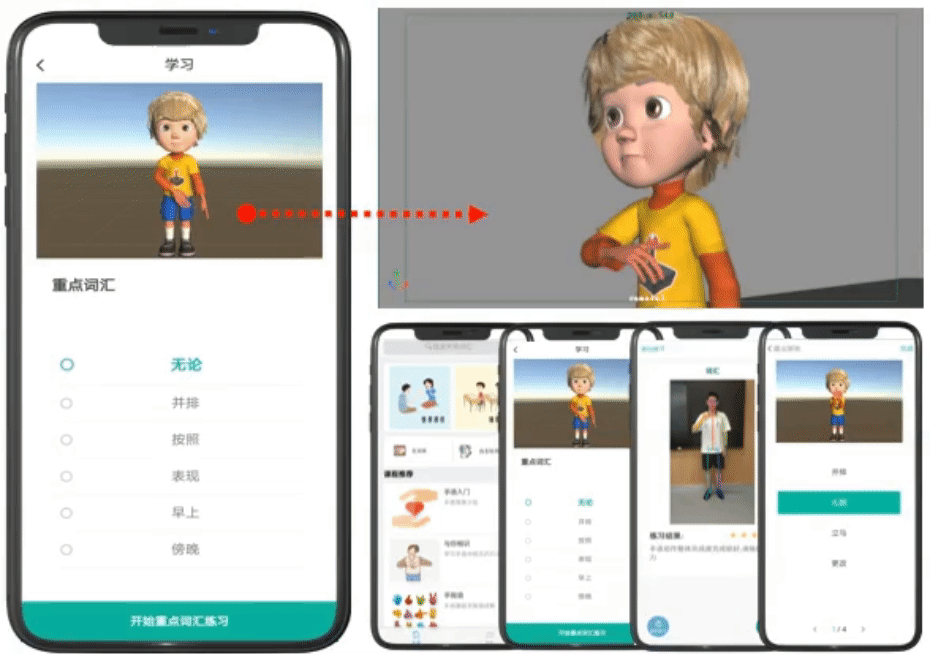
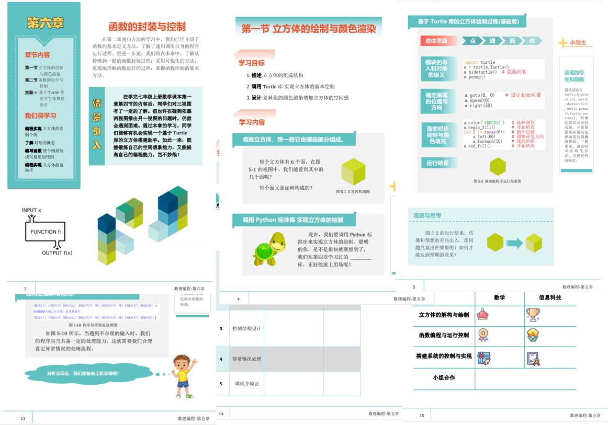

An intelligent sign language learning platform
This platform primarily helps deaf children and their teachers learn sign language through 3D sign language animation courses, AI-driven formative assessments via hand pose tracking, and a related question bank.

Mathematics and programming course design
This course, designed for eighth-grade students, includes a series of problem scenarios related to math lessons. It helps students consolidate their math knowledge while learning to solve problems with programming.
Dialect learning & entertainment short video app
This app features dialect-based humorous short videos and offers daily activities and professional editing tools. Alongside entertainment, it supports dialect preservation.

Data visualization for amusement park operation
This project visualizes guest traffic changes, unique visitor trajectories, and communication logs to provide improvement suggestions for amusement park operations.